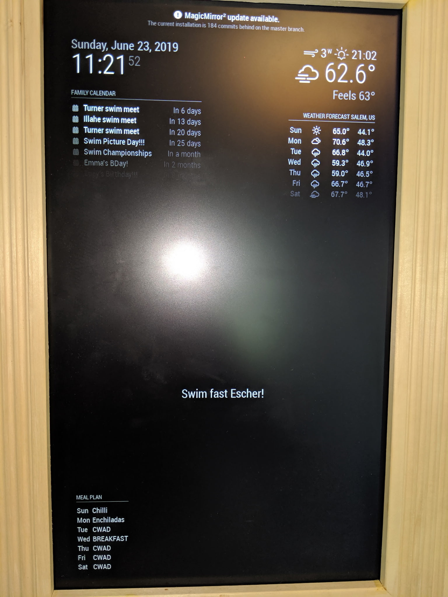
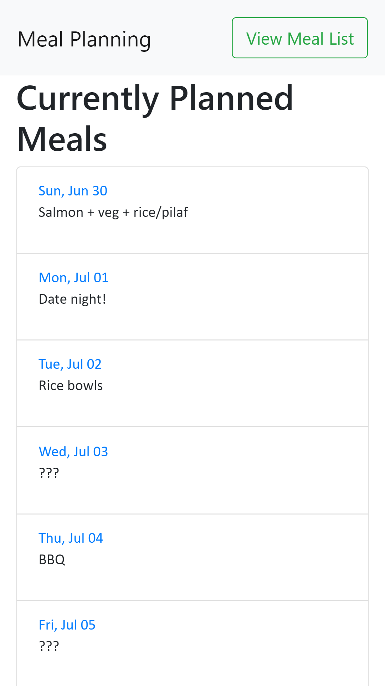

MagicMirror modules

MMM-MealPlan is a module for the MagicMirror smart display. You set up meals and the weekly schedule in a web editor that the mirror hosts at /mealplan, so you can plan from any phone or laptop on the network. A day you haven't planned can show as unplanned or get a random meal from your list. I built it so the household could see what's for dinner at a glance, without a separate app or a whiteboard on the fridge.
